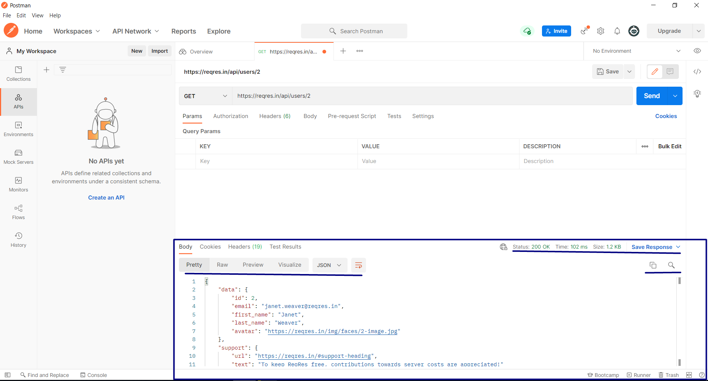
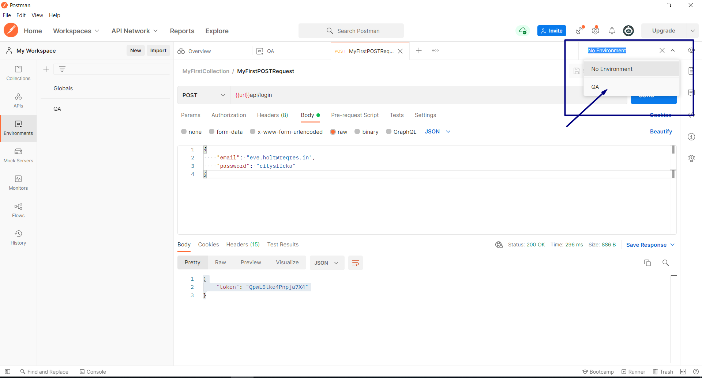

Что такое API.
Знакомимся с API — что это и для чего он нужен? Начнем с простого примера: люди общаются между собой с помощью языка письменного или устного, жестов и мимики. Чтобы взаимодействовать с компьютером, человеку нужен пользовательский интерфейс — это экран с графическими элементами, клавиатура и мышь. А вот различным программам и приложениям в интернете для общения нужен интерфейс, который понимают сами программы, где они установлены. Одним из таких способов общения между программами является API, программный интерфейс приложения (Application Programming Interface). Этот способ взаимодействия упрощает разработку приложений, потому что позволяет обмениваться данными и функциями легко и безопасно.
Многие компании используют API других компаний и открывают свой собственный для взаимодействия и использования функций друг друга. Популярная функция, где используется API, — это возможность заходить на какие-то приложения с помощью пользовательского аккаунта Google, Facebook, Twitter, SberID, AppleID. Эта удобная функция позволяет любому веб-сайту использовать API одной из наиболее популярных служб для быстрой аутентификации пользователя, экономя время и силы по настройке нового профиля для каждого приложения.
Другой пример — сторонняя обработка платежей, например оплата через PayPal, которую можно видеть на веб-сайтах. Это позволяет покупателям оплачивать товары в Интернете, не раскрывая конфиденциальные данные и не предоставляя доступ неавторизованным лицам.
Ещё популярный пример (наверняка вы его использовали) — сравнение цен на отели или билеты. Такие сайты используют API отелей и, например, авиакомпаний, и объединяют информацию о рейсах, демонстрируя самые дешёвые варианты для каждой даты и пункта назначения. Благодаря такому обмену данными и запросами API-интерфейсы значительно сокращают время и усилия, необходимые для проверки доступных рейсов или жилья.
Разрабатывая свое приложение, не нужно знать, как устроен API сервиса, который вы хотите использовать, вы просто учитесь обмениваться сообщениями через документированный интерфейс. Вообще, использование API резко возросло за последнее десятилетие до такой степени, что многие из самых популярных сегодня веб-приложений были бы невозможны без API.
API — это программный код, содержащий набор определенных правил, которые объясняют, как компьютеры или приложения взаимодействуют друг с другом. API-интерфейсы находятся между приложением и веб-сервером, выступая в качестве промежуточного уровня, который обрабатывает передачу данных между системами. API предоставляют вам конечную точку (endpoint) — это конкретный URL-адрес (Uniform Resource Locator). В свою очередь, URL — унифицированный указатель ресурса — это то, что отображается в строке браузера, когда вы заходите на тот или иной сайт, где доступны нужные вам данные или функции. Кроме этого, есть ещё параметры, задавая значения которых вы можете получать конкретные данные. Как происходит взаимодействие с помощью API?
- Клиентская часть приложения формирует запрос данных, инициирует вызов API.
- После получения действительного запроса API обращается к внешней программе или веб-серверу.
- Сервер отправляет ответ API с запрошенной информацией.
- API передает данные исходному запрашивающему приложению.
API обеспечивает безопасность передачи данных, потому что его положение в качестве посредника отделяет приложение-клиент от инфраструктуры сервиса, предоставляющего услугу. Возьмём, к примеру, API службы обработки платежей, где системе не требуется доступ к банковскому счету пользователя; API создает уникальный токен для этой транзакции и включает его в вызов API к серверу. Это обеспечивает более высокий уровень защиты от потенциальных угроз взлома.
Давайте рассмотрим, какие бывают типы API.
Первый тип — это открытые API, их могут использовать любые приложения и сервисы. Это программные интерфейсы приложений с открытым исходным кодом, к которым может получить доступ любой разработчик. У них определены конечные точки (endpoints) API и форматы запросов и ответов. Это помогает повысить узнаваемость бренда и получить дополнительный источник дохода.
Партнерские API — это интерфейсы, доступные бизнес-партнерам. Чтобы использовать такой API, необходимо получить соглашение на использование и иметь учётные данные для доступа. Предоставление своего API партнерам даёт возможность дополнительных доходов.
Внутренние или частные API скрыты от внешних пользователей. Эти API используются внутри компании и предназначены для повышения производительности и взаимодействия между различными внутренними сервисами или для создания новых систем или приложений для клиентов, использующих существующие системы.
И еще есть составные API, которые объединяют API. Эти службы позволяют разработчикам получать доступ к нескольким endpoints за один вызов. Такие API часто используются в микросервисной архитектуре, где для выполнения одной задачи может потребоваться информация из нескольких источников.
Какие преимущества у взаимодействия через API?
- Улучшенная совместная работа: API обеспечивают интеграцию, чтобы платформы и приложения могли беспрепятственно взаимодействовать друг с другом. Благодаря этой интеграции компании могут автоматизировать и улучшить рабочие процессы.
- API предлагают гибкость, позволяя компаниям устанавливать связи с новыми деловыми партнерами, предлагать новые услуги для существующего рынка или выходить на новые рынки, которые могут принести огромную прибыль.
- Монетизация данных: многие компании предпочитают предлагать API бесплатно, по крайней мере, на начальном этапе, чтобы они могли создать аудиторию разработчиков вокруг своего бренда и наладить отношения с потенциальными деловыми партнерами. Однако, если API предоставляет доступ к ценным цифровым активам, можно монетизировать его, продавая доступ.
- Дополнительная безопасность: как мы уже говорили, API создают дополнительный уровень защиты между вашими данными и сервером.
При использовании API-интерфейсов существует два общих архитектурных подхода — сервис-ориентированная архитектура (SOA) и архитектура микросервисов.
SOA — это стиль разработки программного обеспечения, в котором функции разделены и доступны в виде отдельных сервисов в сети, это программный компонент, к которому можно получить доступ через веб-адрес. Обычно SOA реализуется с помощью веб-сервисов. Разработчики могут создавать эти службы с нуля, но обычно они создают их, предоставляя функции из устаревших систем в качестве интерфейсов служб.
Архитектура микросервисов — это альтернативный архитектурный стиль, который разделяет приложение на более мелкие независимые компоненты. Применение приложения как набора отдельных сервисов упрощает тестирование, поддержку и масштабирование. Эта методология приобрела известность в эпоху облачных вычислений, позволяя разработчикам работать над одним компонентом независимо от других. Архитектура микросервисов построена для масштабирования, обеспечивая командам гибкость, необходимую для создания, изменения, тестирования и развертывания приложений, с более короткими циклами итераций.
Что такое REST и SOAP.
Мы уже поняли, что API — это набор правил для передачи данных. Так вот, чтобы эти правила были соблюдены и могли использоваться, их нужно задокументировать. Документация API нужна, чтобы стандартизировать обмен данными между веб-службами. Так обеспечивается способность различных систем, написанных на разных языках программирования или работающих на разных ОС или использующих разные технологии, взаимодействовать друг с другом без каких-либо проблем.
Для документирования API были разработаны определённые протоколы правил, которые определяют принятые типы данных и команды. Было разработано несколько протоколов.
Достаточно “взрослый” SOAP (Simple Object Access Protocol) — это протокол API для обмена структурированной информацией, построенный на XML (eXtensible Markup Language, расширяемый язык разметки). XML в свою очередь позволяет пользователям отправлять и получать данные через SMTP (Simple Mail Transfer Protocol, простой протокол передачи почты) и HTTP (HyperText Transfer Protocol, протокол передачи гипертекста). С помощью API, использующих SOAP-протокол, проще обмениваться информацией между приложениями или программными компонентами, которые работают в разных средах или написаны на разных языках.
SOAP в основном используется с корпоративным веб-приложениями для обеспечения высокой безопасности передаваемых данных. API, работающие по SOAP-протоколу, используются в финансовых и телекоммуникационных ПО. Публичный API PayPal — один из широко известных API-интерфейсов SOAP. Он также часто используется для поддержки устаревших систем.
SOAP API устроен следующим образом: для каждого сервиса существует свой свод правил общения с ним. Эти правила описаны в таком документе как WSDL (Web Services Description Language, язык описания веб-сервисов, основанный также на XML). В WSDL описано местоположение сервиса, т. е. его endpoint, по которому вы вызываете его, и правила для каждого поля, передаваемого в сообщении. Там можно увидеть, какие сообщения можно слать к сервису, их структуру. И если клиент пошлёт серверу сообщение, которое не подходит под правила WSDL, сервер ответит на такое ошибкой.
Расширяемый язык разметки (XML) — это простой и очень гибкий текстовый формат, широко используемый для хранения структурированных данных и обмена ими через Интернет или другие сети. XML определяет набор правил для кодирования документов в формате, который могут читать как люди, так и машины. Язык разметки — это набор символов, которые можно помещать в текст для выделения и обозначения частей текстового документа. Текстовые XML-документы содержат информативные теги объектов данных, что делает их легко читаемыми.
<cat>
<name>Вася</name>
<breed>-</breed>
<age>1</age>
<color>чёрный</color>
</cat>
Для описания XML документа существует язык XSD (XML Schema Definition), или XSD Schema. В этой схеме тоже указано, какие элементы должны присутствовать, какие из них обязательны, какие типы данных используются для элементов.
Подытожим: сервисы, использующие SOAP API обмениваются структурированной информацией, сообщениями. WSDL — документ, описывающий сам сервис, его функции, типы сообщений, а XSD схема — это документ, который задает синтаксис для сообщений.
Второй подход к проектированию API — REST (Representational State Transfer, передача репрезентативного состояния). Его считают не протоколом, а архитектурным стилем. При использовании REST API отсутствуют официальные стандарты, однако при их разработке необходимо придерживаться определенных ограничений. Таких ограничений шесть, мы не будем их разбирать в рамках курса. Отсюда следует запомнить только то, что чем больше этих ограничений используется при разработке REST API, тем более приложение будет становиться RESTful.
Логика REST заключается в том, чтобы делать данные доступными как ресурсы. Каждый ресурс представлен уникальным URL-адресом (endpoint) и параметрами. Можно запросить этот ресурс, указав его URL-адрес с нужными вам параметрами.
REST поддерживает обмен сообщениями в различных форматах, таких как обычный текст, HTML, YAML, XML и JSON, в то время как SOAP допускает только XML. Возможность поддерживать несколько форматов для хранения и обмена данными даёт преимущество для использования REST-архитектуры.
Чаще всего для передачи сообщений используется формат JSON (JavaScript Object Notation). Это легкий и простой для анализа текстовый формат, представляющий собой ключ-значение.
{
"animal": "cat"
"name": "Вася"
"breed": " "
"age": "1"
"color": "Чёрный"
}
Есть ещё другие протоколы передачи данных, которые используются для API. Например, RPC (Remote Procedure Call, удалённый вызов процедур) определяет взаимодействие между клиент-серверными приложениями. Одна программа (клиент) запрашивает данные или функции у другой программы (сервера), расположенной на другом компьютере в сети, и сервер отправляет требуемый ответ. RPC также известен как вызов подпрограммы или функции.
XML-RPC — это протокол, который полагается на определённый формат XML для передачи данных. XML-RPC старше, чем SOAP, и считается его прародителем.
JSON-RPC — это протокол, аналогичный XML-RPC, но в этом протоколе для передачи данных используется JSON вместо формата XML. Оба протокола просты. Хотя вызовы могут содержать несколько параметров, они ожидают только одного результата.
HTTP и HTTPS. Методы запросов.
Всё взаимодействие в интернете происходит за счёт пересылки сообщений между приложениями. Для того чтобы такая пересылка была возможна, был создан протокол передачи HTTP (HyperText Transfer Protocol, протокол передачи гипертекста). Этот протокол можно назвать способом связи, с помощью которого в интернете передаются сообщения, такие как SOAP и REST. Для передачи данных HTTP имеет специальные методы для определённых целей.
HTTP-сообщения состоят из трех частей: строки запроса, которая содержит метод запроса, URL -адреса ресурса, запрашиваемого клиентом, и версии протокола. Заголовки (Headers) и тело сообщения не являются обязательными при отправке сообщений.
Метод запроса указывает на то, какую операцию хочет выполнить клиент. Их существует несколько типов, наиболее популярные: GET, POST, PUT, DELETE, но есть и другие: HEAD, OPTIONS, CONNECT, PATCH.
GET — метод для запроса данных с сервера или ресурса, он работает, когда мы загружаем какие-то страницы в интернете. Этот метод не имеет тела, выглядит как одна строка с адресом ресурса и параметрами запроса.
POST — метод отправки данных на сервер, этот метод имеет тело, в отличие от GET. В теле запроса отправляются все данные на сервер. Ещё одно яркое отличие этих двух часто используемых методов в том, что GET имеет ограничение, т. к. он отправляется в строке URL-а ресурса, и, соответственно, он ограничен его длиной — 2048 символов. А вот POST не ограничен, потому что данные отправляются в теле.
PUT — метод обновления ресурсов и данных на сервере. Если, например, такого ресурса нет на сервере, то он его создаст и отправит код ответа 201.
DELETE удаляет данные с сервера. Чтобы иметь возможность обновлять и удалять данные на сервере, необходимо иметь определённые права.
Про другие методы: HEAD действует как GET, но отличие в ответе от сервера: ответ не содержит тело, возвращает клиенту только заголовок. Метод может использоваться, например, для проверки наличия ресурса. OPTIONS используется для определения взаимодействия клиента и сервера, к примеру, для указания допустимых методов при взаимодействии. PATCH частично изменяет данные.
URL (Uniform Resource Locator) — уникальный адрес ресурса, с которым мы работаем и с которого запрашиваем данные. Ну и версия протокола — обычно это HTTP/1.1. Эта версия протокола существует с 97-го года, но лет пять назад появилась версия 2, которая набирает обороты.
При ответе от сервера в строке запроса указывается статус-код. Все коды разделены на 5 больших групп: 1хх (сотые 100, 101 и т. д.) — различные информационные статусы. 2хх (двухсотые) — статус-коды, которые сообщают об успешных манипуляциях, об успешной отправке запроса. 3хх (трёхсотые) сообщают о перенаправлении ресурсов. 4хх (четырёхсотые) коды сообщают об ошибках на клиентской стороне. Наверняка вы сталкивались с ошибкой 404 при загрузке страниц. Этот код говорит о том, что такой ресурс не существует. И последняя группа, 5хх (пятисотые), говорит об ошибках на серверной стороне. Наиболее часто встречающийся код 500 — сервер недоступен, или любая его внутренняя ошибка.
Заголовки сообщения содержат различную дополнительную информацию, выглядят они как обычная строка, порой очень длинная. Они могут быть общими, которые относятся в целом к сообщению, но не к пересылаемым данным. Помимо них есть заголовки запроса (Request Headers), которые содержат информацию о запрашиваемом ресурсе или о клиенте, запрашивающем ресурс. И заголовки ответа (Response Headers), которые несут в себе информацию об ответе, например какие-то данные о сервере.
С HTTP разобрались, но часто слышим про HTTPS. Что же это такое? HTTP сам по себе не защищает передаваемые данные, поэтому для этой цели было создано расширение HTTPS (HyperText Transfer Protocol Secure). На самом деле, оно позволяет защитить данные по трём аспектам: с точки зрения конфиденциальности, достоверности и идентификации. Конфиденциальность подразумевает, что данные никак не могут быть прочитаны никем сторонним, их увидит только конечный получатель. Достоверность гарантирует, что сообщение никем не может быть перехвачено и изменено, данные дойдут до получателя в том виде, в котором их отправили. И идентификация означает, что можно быть уверенным в том, что сообщение пришло точно от того адресата. Поэтому чаще всего все ресурсы в интернете работают по HTTPS, это подтверждает замок в адресной строке. Такой знак не может быть подделан, потому что это сложная процедура, которая выдает ресурсам определённый сертификат безопасности. И наоборот, если вы пользуетесь незащищённым ресурсом, то нет гарантии, что ваши данные не уйдут налево.
Postman и работа в нём.
Знакомимся с работой в Postman.
Postman — это инструмент, который выступает в роли API клиента. Он используется для разработки, тестирования, документирования API.
Возможности Postman:
- отправлять запросы к серверу и видеть ответы
- создавать коллекции запросов
- запускать автоматизированные тесты
- делиться информацией с другими участниками команды
- можно отправлять REST и SOAP запросы
Установка Postman
Postman API Platform | Sign Up for Free
Выбираем ОС своего устройства:
- писать тесты
Устанавливаем приложение на своё устройство, кликнув на файл-установщик:
После установки приложение попросит вас создать аккаунт:
Можно воспользоваться гугл-учёткой, если у вас она есть и настроена, или создать аккаунт вручную.
Принимаем соглашение о пользовании.
В программе вводим своё имя и выставляем галки напротив тех пунктов, для которых вы планируете пользоваться Postman.
Дальше можно продолжить работу, не присоединяясь к команде, если у вас её нет.
Ну и всё, все настройки установлены, вы попадаете в саму программу Postman и можете начинать работу в ней.
Для перехода в рабочую область программы нужно перейти на вкладку My Workspace:
 Workspace — основная вкладка, с которой приходится работать. Вообще, интерфейс Postman здесь содержит три области — Header, Sidebar, Builder.
Header — это верхняя область, где расположены кнопки меню, настроек.
Sidebar — левая область экрана, где содержатся кнопки для быстрого доступа к истории запросов, к коллекциям вызовов, мок-серверу и прочему.
Ну и самая основная область — это Builder, тут создаем запросы, отправляем и видим ответ от сервера. Верхняя часть — для запроса, нижняя — для ответа.
Workspace — основная вкладка, с которой приходится работать. Вообще, интерфейс Postman здесь содержит три области — Header, Sidebar, Builder.
Header — это верхняя область, где расположены кнопки меню, настроек.
Sidebar — левая область экрана, где содержатся кнопки для быстрого доступа к истории запросов, к коллекциям вызовов, мок-серверу и прочему.
Ну и самая основная область — это Builder, тут создаем запросы, отправляем и видим ответ от сервера. Верхняя часть — для запроса, нижняя — для ответа.
Создаем первый запрос.
Переходим в Builder для создания запроса. New → HTTP Request. Выбираем из выпадающего списка метод запроса, который будем использовать. В примере мы будем использовать метод GET. Помним, что метод GET нужен для запроса данных, он передается прямо через URL и может содержать или не содержать параметры. Для создания запроса нужно указать URL или эндпойнт, по которому происходит обращение к серверу. Для тренировки можно использовать такой ресурс, как Reqres:
Reqres - A hosted REST-API ready to respond to your AJAX requests
Выбираем любой метод: Жмём на запрос и видим, как он отработал через браузер, на странице отобразился ответ от сервера. Сейчас то же самое нужно выполнить через Postman. Копируем URL из адресной строки и вставляем его в Postman.
Так как GET — запрос простой, для него не нужно заполнять никакие другие вкладки. Params не указываем, т. к. выбрали запрос без параметров. Вкладка Headers содержит какие-то значения по умолчанию. Отправляем запрос по кнопке Send.
 В нижней части экрана получаем ответ сервера. В Body приходят данные от сервера в формате JSON. Есть возможность выводить их в других форматах, предоставленных в выпадающем списке. Есть кнопки, которые позволяют по-разному отображать ответ: Pretty представляет читабельную форму, где параметры и значения подсвечены цветным и расположены в иерархическом порядке; Raw представит ответ в виде строки; Preview отрисует ответ так, как он рендерится в браузере.
В нижней части экрана получаем ответ сервера. В Body приходят данные от сервера в формате JSON. Есть возможность выводить их в других форматах, предоставленных в выпадающем списке. Есть кнопки, которые позволяют по-разному отображать ответ: Pretty представляет читабельную форму, где параметры и значения подсвечены цветным и расположены в иерархическом порядке; Raw представит ответ в виде строки; Preview отрисует ответ так, как он рендерится в браузере.
Справа информация об ответе: его статус-код, время, за которое выполнился запрос, и объём ответа. Есть возможность сохранить ответ по кнопке Save Response. Кнопка Лупа позволяет искать в ответе нужную вам информацию, и кнопка Копировать скопирует весь ответ в буфер компьютера.  Сохраняем запрос в коллекцию по кнопке Save. Указываем имя запроса, кладём его в нужную коллекцию или, если коллекций ещё нет, создаём и сохраняем.
Отправляем POST запрос.
Теперь, когда уже создана коллекция запросов, запрос можно добавлять сразу внутрь коллекции через опцию Add Request: По умолчанию они все создаются с методом GET. Сразу есть возможность дать запросу имя. Выбираем метод POST и указываем URL запроса. Помним, что POST отличается от GET наличием тела запроса (Body). Прописываем тело на вкладке Body с типом Raw/JSON. В теле запроса прописаны параметры запроса и их значения, которые мы отправляем на сервер. Покажу волшебную кнопку: допустим вы вручную заполняете тело запроса и, печатая, не заморачиваетесь о внешнем виде данных. Кнопка Beautify позволит автоматически разложить ваши данные красиво. Отправляем запрос Send и получаем ответ от сервера. Атрибуты ответа такие же. Тут можно поиграться с запросом, проверяя различные случаи отправки параметров. Собственно, в этом и заключается тестирование API — проверка корректной отправки запросов и анализ ответов. Несколько слов отдельно про Коллекции — это набор запросов, которые можно хранить вместе и группировать по определённой логике. Создаем коллекцию аналогично запросу: Задаем имя коллекции, можно указать какое-то описание для неё. Коллекциями можно делиться. Внутри коллекции можно создавать папки Add Folder: Полезная вкладка Авторизация (Authorization) — тут можно указать данные авторизации, которые будут применимы ко всем методам внутри коллекции. Остальные вкладки больше используются для автоматизации. Что такое Environment (окружение)?
Environment в Postman — это набор пар ключ-значение, которые можно использовать в любых запросах. Ключ — это то, по чему мы обращаемся, значение — конкретное значение, которое будем использовать. Допустим, у вас на проекте есть два окружения (две среды, два стенда, два окружения, называть их можно как угодно). У каждого окружения может быть разное назначение: например, есть стенд для ручного тестирования фичей, т. е. туда заливают все новые задачи, которые отдаются в работу тестировщикам, и есть отдельный стенд для регрессионного тестирования. Так вот, когда вы тестируете много API-запросов, в соответствии с этими окружениями можно настроить окружения в Postman и не создавать два одинаковых запроса на два окружения. Создаем окружение с названием QA, указываем в нём пару: ключом будет url, а его значение - https://reqres.in/. Обращаться по ключу можно через двойные фигурные скобки {{url}}.
Указываем этот ключ в запросе.
Для выполнения запроса необходимо переключиться на окружение, чтобы была возможность использовать эту пару. Выбираем нужный нам стенд и выполняем запрос.  Это один из простых примеров использования окружения. По такому принципу там можно задавать различные другие переменные, которые вы желаете использовать.